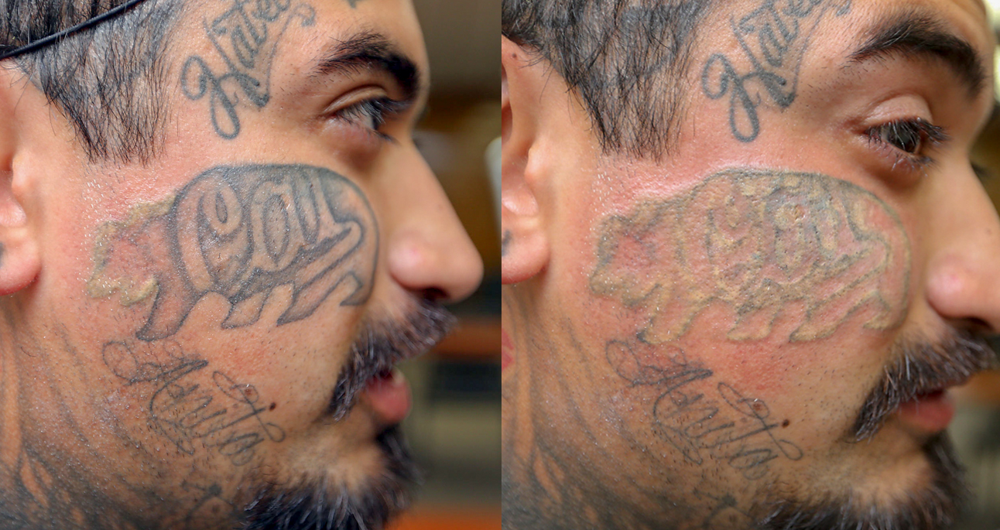
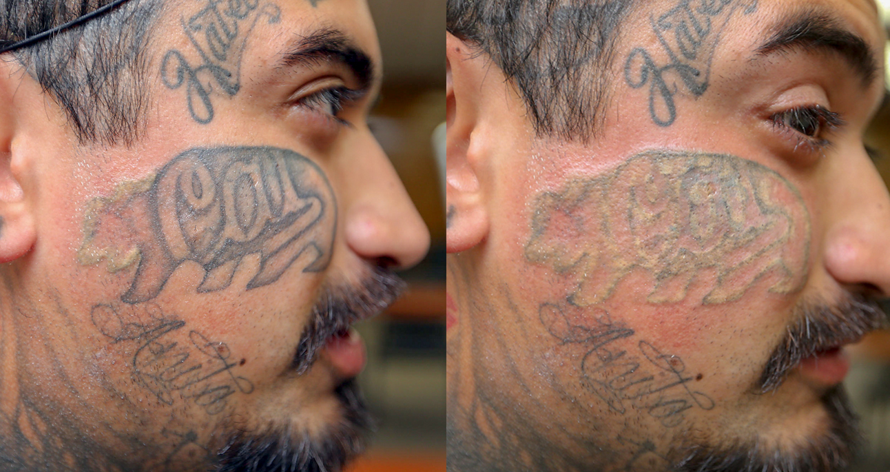

At the Inkjection tattoo parlor, we specialize in drawing perfect tattoos using modern tehnology. This tattoos are safe and affordable. From simple small tattoos to complex full bodies tattoos, we are your shop. Our artists are specialists that will convert any reasonable idea about a tattoo to reality. Come to us with your idea and we will advice you how to make it perfect. Here at Inkjection, we use tattoos to tell stories, memorialize events and turn bodies into living work of art. For many people, tattoos are personal works of body art, so an off-the-shelf approach doesn't work for everyone. If you want to create your own tattoo, but aren't an artist yourself, then custom tattoo design may be what you need because you can hire a tattoo designer. Starting with a brief description of your design their team provides an estimate of the cost. After agreeing on the estimate, you go on to select an artist to work on your design...Find out more in tattoo images.
We want to make sure that you are happy with the end result. Before you recieve the final design, the artist sends you a rough sketch to approve. If you are not satisfied with their design, we will give you a full refund of your deposit. The final design comes with a certificate of authenticity releasing the copyright from the artist so you can get your custom tattoo inked.
 Tattoo removal

Tattoo removal

The Inkjection tattoo parlor also provides the service of tattoo removal. Using a high-intensity laser light beam to break up the pigment colors, we remove tattoos in the most healthy way and we take care of your skin.
How it works In general, this is what you should expect during a laser tattoo removal session:
1. You will be given a pair of protective eye shields.
2. The technician will test your skin's reaction to the laser to determine the most effective energy for treatment.
3. The technician uses the laser to pass pulses of intense light through the top layers of your skin that will be absorbed by the tattoo pigment only.
Smaller tattoos will require fewer pulses while larger ones will need more to remove them. In either case, to completely get rid of a tattoo, it will take several treatements. After each visit, your tattoo should become progressively lighter.
Does tattoo removal hurt?
Yes, tattoo removal hurts but unlike most people assume, it is not unbearable. There are high chances that a tattoo removal won't hurt as much as getting the tattoo did.